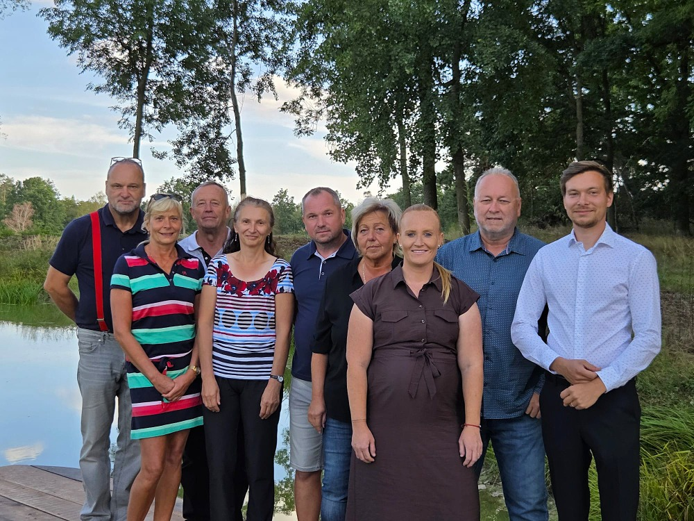

Stabilizace skalního svahu
Zajistili jsme skalní stěnu nad domy čp. 91 a 92. Celkové náklady: 4,59 mil. Kč s 80% dotací.
Čistá u Mladé Boleslavi – náš domov.

Stabilizovali jsme skalní svah, vybudovali nový chodník s osvětlením a dokončujeme splaškovou kanalizaci. Čistá se mění k lepšímu. Pojďte s námi dotáhnout další projekty, které dávají smysl.
Za poslední 4 roky jsme připravili a realizovali spoustu dobrých věcí. To je teprve začátek. Pojďte se podívat, co už funguje a kam se posouváme dál.
Zajistili jsme skalní stěnu nad domy čp. 91 a 92. Celkové náklady: 4,59 mil. Kč s 80% dotací.
Vybudovali jsme nový chodník podél místní komunikace, opěrné zdi a osvětlení. Konečná cena: 10,68 mil. Kč.
Stavba zahájena v 10/2024, k 25. 9. 2026 bude dílo dokončeno a předáno. Následně bude požádáno o kolaudační rozhodnutí na tuto stavbu. Rozpočet: 188,58 mil. Kč.
Máme plány na další roky – od rozvoje kultury až po moderní služby. Chceme v tom pokračovat a rádi k tomu přizveme všechny, kdo mají chuť pomáhat.
Žádné prázdné sliby, jen výsledky s reálnými čísly.
Reálný plán, který stojí na zkušenosti a odpovědnosti. Nejdříve dokončíme projekt splaškové kanalizace a poté stabilizujeme finance, abychom mohli investovat dál.
Čistá je náš domov. Chceme, aby se tu dobře žilo všem.
Neslibujeme nemožné. Chceme pokračovat v projektech, které dávají smysl.
Společně tvoříme budoucnost. Ta začíná tady, v Čisté.
Neslibujeme, co nezvládneme. Nové chodníky a parkovací stání, kanalizace – to jsou projekty, které jsme dotáhli od prvního návrhu až do zdárného konce. To je náš styl.
SpolehlivostDíky evropským penězům jsme ušetřili obecní rozpočet na další potřeby. Projekty realizujeme s výraznými úsporami.
DotaceChodíme po stejných ulicích, potkáváme se na návsi, naše děti chodí do stejné školky a školy. Nejsme žádní cizí lidé, jsme vaši sousedé. To, co děláme, děláme pro svůj domov.
SousedéNebojíme se nových nápadů a moderních řešení. Chceme, aby naše vesnice držela krok s dobou a byla připravená na budoucnost. S vámi.
Moderní přístupUmíme jednat s developery a získat ze spolupráce významné plnění pro obec.

„V současné době dokončuje již třetí volební období ve funkci starosty obce. Pod jeho vedením se podařilo konsolidovat obecní rozpočet, dokončit řadu investičních akcí, jež zlepšily jak vizuální, tak bezpečnostní stránku obce, a zejména dokončit významný a pro obec velice potřebný projekt Čistá – Výstavba splaškové kanalizace. Rád by ve své funkci pokračoval i v dalším volebním období a i nadále pomáhal všem občanům naší obce při napojování domácností na dokončenou veřejnou část splaškové kanalizace.“
„Dlouholetý zastupitel. V zastupitelstvu obce působil nepřetržitě od voleb v roce 1994 až do konce volebního období 2010–2014. Od roku 2018 opět působí v zastupitelstvu obce ve funkci místostarosty. Nyní je znovu ochoten pomoci svými letitými zkušenostmi v zastupitelstvu obce Čistá.“
„V zastupitelstvu obce dokončuje první volební období, kde byl předsedou Finančního výboru obce. Avšak již několik let zajišťuje pro obec kompletní údržbu veřejného osvětlení a ostatní elektromontážní práce na všech obecních budovách. Pro naši obec je i nadále ochoten pomoci v zastupitelstvu obce Čistá.“
„V zastupitelstvu obce prozatím nepůsobil, avšak již několik let zajišťuje pro obec veškeré technické práce. Je ochoten pomoci svými zkušenostmi, a to v oblasti životního prostředí, veřejné zeleně a rozvoje obce.“
„V zastupitelstvu obce prozatím nepůsobila. Je ochotna pomoci svými několikaletými zkušenostmi v oblasti odpadového hospodářství a veřejné zeleně.“
„V zastupitelstvu obce působila nepřetržitě ve volebních obdobích 1998–2010 a dále od období 2014 až doposud. V tomto volebním období je předsedkyní Kulturního výboru obce a pracuje pro Sbor pro občanské záležitosti. Nyní je opět připravena pomoci svými zkušenostmi, a to zejména v oblasti společenského a kulturního dění.“
„V zastupitelstvu obce již působila ve volebním období 2018–2022, avšak již od roku 2015 zajišťuje pro obec vyřizování různých stavebních povolení a souhlasných stanovisek. Nyní je ochotna pomoci svými odbornými zkušenostmi v zastupitelstvu obce, a to zejména v oblasti projektů a výstavby.“
„V zastupitelstvu obce prozatím nepůsobila. Naší obci je ochotna pomoci v oblasti školství a společenského a kulturního dění.“
„V zastupitelstvu obce působil ve volebním období 2002–2006 a dále od volebního období 2014 až doposud. V tomto volebním období byl předsedou Sportovního výboru. Je ochoten i nadále pomoci v oblasti sportu a odpadového hospodářství.“